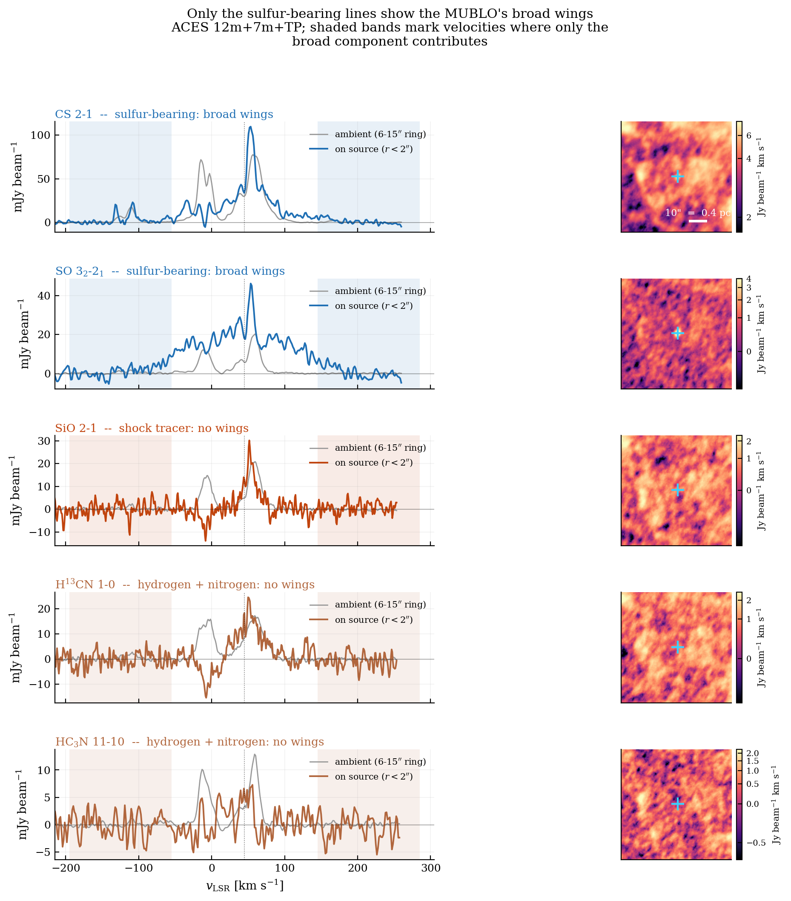
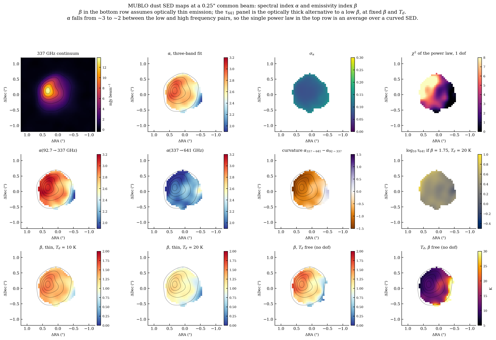
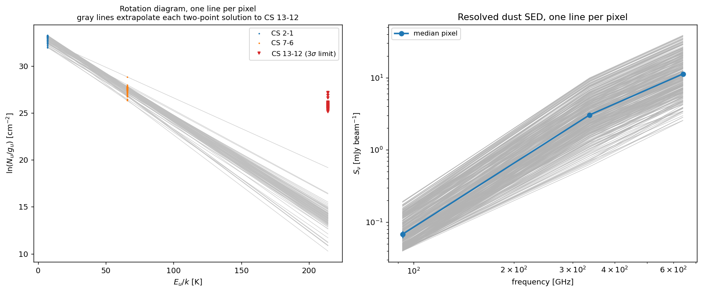
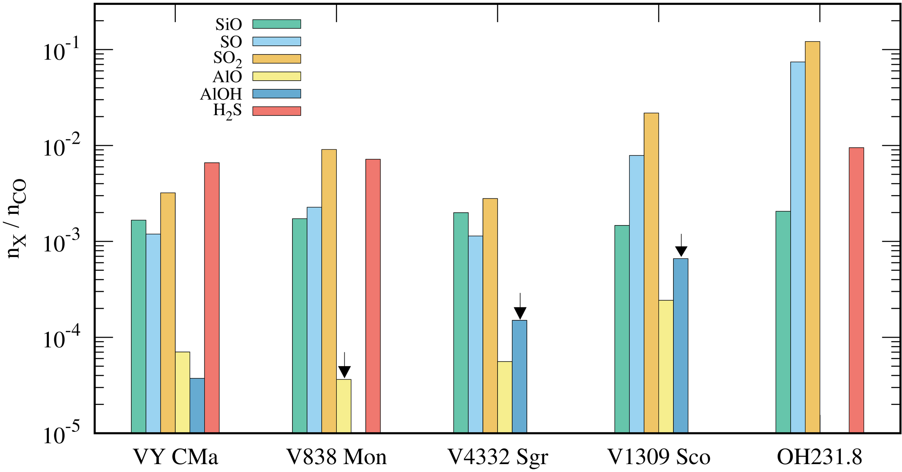
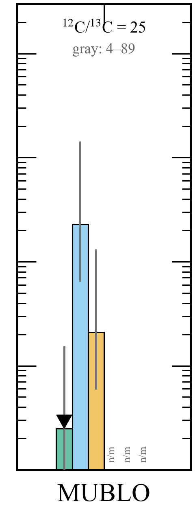

MUBLO
M illimeter U ltra-B road-L ine O bject
in the Galactic center
Adam Ginsburg
University of Florida
The MUBLO: a compact source in the Galactic center with ~160 km/s wide molecular lines, cold dust, odd chemistry,
and no counterpart identified so far. Plan: (1) the discovery, (2) what the new ALMA data show, (3) how it compares
with luminous red novae (stellar mergers), and with hydrogen-poor objects -- R CrB stars, Pa 30 / SN 1181, and Type Iax
supernovae. Nothing here says what it is; the point is which ideas survive the data.
The MUBLO
Found in the ACES 3 mm survey of the central molecular zone (Ginsburg+ 2024, ApJL 968, L11). G0.02467-0.0727: the
faint point source in the inset. In continuum it is unremarkable -- it was found because of its lines.
1" = 8200 au at 8.2 kpc.
Broad: FWHM ≈ 160 km s−1
CS, SO, 34SO and SO2 lines, ~160 km/s FWHM and Gaussian-looking, centered at v_LSR ~40-50 km/s, so it is in the
Galactic center. Discovery data (ACES, ~1-2" resolution).
Broader than the CMZ, but compact
Same spectra with the surrounding-cloud (total-power / single-dish) spectra overlaid: the CMZ gas around it, famously
turbulent, is much narrower. In the discovery data the MUBLO was compact (<~2"). That combination -- very broad, very
small -- is what makes it unusual.
Weird chemistry: no SiO
SMA follow-up: H2 S
Many lines you would expect from a broad-line source are missing. Most telling: SiO 2-1 (fragment highlights it), the
classic shock tracer, so there are no strong (>~10 km/s) shocks despite 160 km/s line widths. Also not detected:
H13CN, H13CO+, HC3N, HN13C, the H40alpha recombination line, the SiO v=1 maser.
Inset: Thushara Pillai's SMA follow-up spectrum with an H2S line near the MUBLO velocity (Gaussian fit shown) -- one reason to say
"hydrogen-poor", never "hydrogen-free".
…and cold
LTE fit to the SO lines in the discovery data: ~13-14 K. Low-density, subthermally excited warmer gas is not excluded.
SO ladder: T ex ≈ 10–12 K
SO, 0.5″ aperture · ALMA: Ginsburg+ in prep
SO rotation diagram from the new ALMA data, one 0.5" aperture on the MUBLO, matched-filtered with the MUBLO line profile.
Detected: 3(2)-2(1) (E_u 9 K) and 2(2)-1(1) (19 K) in Band 3, 8(8)-7(7) (88 K) in Band 7. Triangles: 3 sigma limits on
4(5)-4(4) (39 K) and 11(11)-11(10) (149 K, Band 9).
No counterpart identified in pre-JWST data (HST, VLT)
GNS K band and the HST Paschen-alpha survey (1.87 / 1.90 um): nothing obvious at the position. The extinction toward
the CMZ is large, so a faint or embedded source is not excluded. The line is "no counterpart identified in pre-JWST data (HST, VLT)";
GNS is VLT/HAWK-I.
Continuum: only the (sub)millimeter
Spitzer 3.6-24 um, Herschel 70-250 um, 850 um, 3 mm, 6 cm, 20 cm; green circle = MUBLO position. It shows up at 850 um and
3 mm and nowhere else -- no X-ray, infrared or radio counterpart in the discovery paper.
new data
New ALMA observations
3 mm · 850 μm · 450 μm, down to 0.07″
ALMA: Ginsburg+ in prep
New ALMA data (Ginsburg et al., in prep): Band 3, 7 and 9 at 0.07-0.09" in the submm -- 11-14x finer than discovery.
Everything numerical from here on is from an unreviewed reduction; the continuum numbers are flagged preliminary.
From 3 mm to 2 μm
× = catalog position
ALMA: Ginsburg+ in prep · JWST NIRCam 2.12 / 4.8 μm · discovery:
Ginsburg+ 2024
Top: the new ALMA images -- 3 mm, 850 um and 450 um continuum, and SO 3(2)-2(1). Bottom: JWST NIRCam 2.12 um and 4.8 um,
a 4.8/2.12 composite, and CS 2-1. At 4.8 um the MUBLO region is a dark patch against the diffuse Galactic-center
background. There is a 4.8 um point source near the crosshair, but its relation to the MUBLO is not established.
The magenta crosshair is the catalog position (RA 266.4905821, Dec -28.9529931, ICRS; the discovery position), and the
center of every cutout -- not a fitted peak and not any near-IR candidate. There are stars near it; none is identified
with the MUBLO. "No counterpart identified so far." The ALMA/JWST registration is only good to ~0.1".
Resolved: a core and an arc
2700 au
arc
core
ALMA: Ginsburg+ in prep · JWST NIRCam F480M
3 mm, 850 um and 450 um continuum at native resolution (beams 0.18x0.14", 0.07x0.05", 0.09x0.06"). A compact core plus
an arc: the arrows run from the brightest point of the arc to the compact core, 0.35" / 0.34" / 0.33" in the three bands
(~2700 au at 8 kpc, using the two sharper bands), at PA ~60 deg, seen independently in all three; the 850 and 450 um peaks
agree to 0.03". Total extent ~0.7" (~5700 au).
Green cross: the JWST F480M point source, 0.09" from the catalog position at PA 73 deg (centroid). It sits within ~0.05"
of the core, which is inside the ~0.1" ALMA/JWST registration uncertainty; its relation to the MUBLO is not established.
Click: the Band 3 image again, with a spider. (Down: the two-maxima cut through all three bands.)
Two maxima in three bands
ALMA: Ginsburg+ in prep
Optional: profile along the line joining the two maxima, each band normalized to its own peak. Separation 0.33-0.35",
PA ~244 deg (the same axis as PA ~60 deg).
Line emission
SO 32 –21 · SO2 43,1 –32,2 · SO 88 –77 (E u = 9–87 K) at 0.25″
ALMA: Ginsburg+ in prep
Line maps at a common 0.25" beam. The line emission is compact, ~0.7" across, like the continuum. Line widths:
sigma_v ~62-67 km/s, i.e. FWHM ~160 km/s, as in the discovery data. (Don't quote a width for
SO 8-7: it sits at a spectral-window edge.) A fuller line-map figure (MUBLO_line_maps.png) exists on HiPerGator.
Detected and not detected
not detected
hydrogen-bearing
not detected
hydrogen-free
ALMA: Ginsburg+ in prep
The new-data counterpart of Fig. 2 of Ginsburg+ 2024: mean T_B in a 0.5" aperture on the MUBLO, 10 km/s bins,
offset vertically (x5 / x10 where marked). Left, detected: CO and 13CO 3-2, CS 2-1 and 7-6, three SO lines, 34SO, SO2.
CO 3-2 is cut up by absorption; the yellow band (120-200 km/s) is the red-wing window used for the CO comparison.
Middle (hydrogen-bearing) and right (hydrogen-free, rare isotopologues): not detected. Dashed curve = the 3-sigma limit
for a line with the MUBLO profile (v = 45, sigma = 67 km/s), noise from the scatter among off-source apertures
(1.1-2.9x the channel noise). HCN 1-0 is 6.4 sigma against the channel noise but only 2.2 against the field.
Ticks under a spectrum mark other lines in its window: the bumps in H2CS 10-9 and 33SO 9-8 are CS 7-6. Preliminary.
HCN suppressed >20× relative to the surrounding cloud
placeholder mublo_2026_assets/alma/MUBLO_chemistry.png(this box fills itself once the file is copied there)

detected
CS SO 34 SOSO2 not detected
HCN H13 CO+ HN13 C CCH HCS+ HOCO+ HNCO CH3 OH HC3 N H2 CS H2 CO SiO ALMA: Ginsburg+ in prep
Seven transitions of four hydrogen-free sulfur-bearing species are detected (CS 2-1 and 7-6, SO 3(2)-2(1), 2(2)-1(1),
8(8)-7(7), 34SO 3(2)-2(1), SO2 4(3,1)-3(2,2); E_u = 7-88 K). Eleven hydrogen-bearing species have only 3-sigma upper
limits (H13CO+, HN13C, CCH, HCN, HCS+, HOCO+, HNCO, CH3OH, HC3N, H2CS, H2CO); SiO 2-1, OCS 8-7 and CS 13-12 are not
detected either. HCN is suppressed by a factor >20 relative to the surrounding cloud.
Say "hydrogen-poor", not "no hydrogen-bearing molecules": these are limits, and the SMA H2S line is there.
Dust: α ≈ 2.8 → 2.0
placeholder mublo_2026_assets/alma/MUBLO_dust_alpha_beta_maps.png(this box fills itself once the file is copied there)

α(3 mm–850 μm) ≈ 2.8 · α(850–450 μm) ≈ 2.0 · β ∼ 1
ALMA: Ginsburg+ in prep
PRELIMINARY (unreviewed reduction). Spectral index ~2.85 between 93 and 338 GHz, flattening to ~2.0 between 338 and 642
GHz: dust, with beta ~ 1. Core-only values are ~2.3 and ~2.4. Caveat: Band 9 has a small largest recoverable
scale (~1"), so spatial filtering could flatten the short-wavelength index. The published discovery value was ~3.3.
Cold dust
ALMA fluxes: Ginsburg+ in prep · SMA: T. Pillai (priv. comm.) · backgrounds: ISO, Spitzer, NIRCam
Data only: ALMA 450 um, 850 um and 3 mm (blue; inset zooms on the submm) and SMA (red; Thushara Pillai), with modified
blackbodies at 10-25 K for scale. The mm points say the dust is cold; no single dust temperature is claimed -- T_d >~ 15 K
(the 642 GHz peak brightness temperature, ~15 K, is a floor). On the left, NOT detections: the diffuse background around it
(ISO SWS, Spitzer, NIRCam); the MUBLO sits in front of that backlight. Fluxes PRELIMINARY. No mass.
Cold gas: T ex ≈ 12 K
placeholder mublo_2026_assets/alma/CS_rotation_diagram_and_dust_SED.png(this box fills itself once the file is copied there)

ALMA: Ginsburg+ in prep
CS/SO rotation diagram from the new data: T_ex ~12 K (range ~10-19 K) -- consistent with the discovery-era ~13-14 K.
Preliminary.
Expansion age
r ≈ 2900 auv ≈ 66 km s−1 r /v ≈ 200 yr
850 μm · ALMA: Ginsburg+ in prep
Expansion age: ~66 km/s of expansion (the velocity dispersion) over a radius of ~2900 au is ~200 yr
(2900 au / 66 km/s = 6.6e9 s ~ 210 yr).
A 200-yr-old expanding object is testable: at 66 km/s and 8.2 kpc the expansion is ~1.7 mas/yr (last slides).
Hypotheses & data (2024)
The discovery paper's table: eight kinds of explanation against the observed properties. Most are inconsistent with
the data or do not fully explain them; it called the MUBLO "observationally unique." The rest of the talk looks harder
at one row (stellar mergers, i.e. red novae) and at hydrogen-poor objects the table did not include.
Other things that make cold, fast, dusty gas?
Luminous red nova stellar merger
R CrB star white-dwarf merger
Pa 30 remnant of SN 1181
Type Iax SN faint thermonuclear SN
Four classes of object to compare against: luminous red novae (stellar mergers -- the "stellar merger" row of the table),
and three hydrogen-poor ones: R CrB stars (thought to be white-dwarf mergers), Pa 30 (the remnant of SN 1181), and Type
Iax supernovae, the class Pa 30 is thought to belong to.
hypothesis
Luminous red novae
stellar mergers
Luminous red novae: outbursts between novae and supernovae in luminosity, now understood as stellar mergers
(common-envelope ejections). Review: Kaminski & Blagorodnova 2026 (A&ARv 34, 8).
V1309 Sco: a contact binary that merged
V1309 Sco: OGLE watched a contact binary for years before 2008 -- eclipsing light curve (left panels), period decaying
(green), slow brightening, then a red-nova outburst. After it: one star. The clearest evidence that red novae are
mergers (Tylenda+ 2011).
Between novae and supernovae
Peak luminosity vs. timescale: red novae (red points) span ~1e38-1e42 erg/s, with plateaus of tens to hundreds of days --
between classical novae and supernovae. Galactic examples: V1309 Sco, V4332 Sgr, V838 Mon, CK Vul.
What a merger leaves behind
low-mass (V1309 Sco, V4332 Sgr)
massive (V838 Mon)
The remnant: a merged star inside cold, dusty, molecular ejecta -- outflows (often bipolar), a disk, shocks where they
collide. Left: a V838 Mon-like remnant with a companion; right: a low-mass remnant like V1309 Sco or V4332 Sgr.
Schematics from the review, not to scale.
Merger remnants in the infrared
luminosity dust K at the GCmid-IR at 8.2 kpc V838 Mon 2002 2×104 L⊙ 125–1350 K ~9 20 Jy V4332 Sgr 1994 ~103 L⊙ est. 200–950 K ~13 0.9 Jy V1309 Sco 2008 ~103 L⊙ 30–460 K ~19 0.6 Jy CK Vul 1670 ~20 L⊙ 15 K not seen 1.4 mJy MUBLO ? 15–50 K >16 <1.3 Jy
K : 8.2 kpc + AK = 3 foreground, no local dust · mid-IR: 19.7–24 µm · MUBLO : GNS K , Spitzer 24 µm
V838 Mon or V4332 Sgr would be seen — unless buried in its own dust
The remnants' observables, scaled to the MUBLO's distance (8.2 kpc). Year = outburst. K adds A_K = 3 of
foreground extinction and assumes no local dust; mid-IR is SOFIA 19.7 um (V838 Mon), MIPS 24 um (V4332 Sgr, CK Vul) and
WISE 22 um (V1309 Sco). The MUBLO: GNS K > 16 (80% completeness), Spitzer 24 um < 1.3 Jy, dust 15-50 K (the 642 GHz
brightness floor and the 2024 SED limit). Build 1: the MUBLO row. Build 2: red = would be seen or differs; green = matches.
V838 Mon: 2.3e4 Lsun (Kaminski+ 2021 model at 5.9 kpc), dust 400 + 125 K in 2019 (Woodward+ 2021) and 1350 K at the
60-au inner hole (ALMA); 19.7 um = 38 Jy at 5.9 kpc. V4332 Sgr: no modern luminosity is published; ~1e3 is an estimate
(~120 Lsun apparent at 1.8 kpc, Kaminski+ 2010, at 4.85 kpc), with disk dust at 200-950 K. V1309 Sco: 575 Lsun at 3 kpc
(Tylenda & Kaminski 2016), ~900 at 3.8 kpc; the 2015 VVV Ks may not be the remnant (Steinmetz+ 2024 see no K continuum
in 2016). CK Vul: 15 K dust, ~20 Lsun at 3.2 kpc (Kaminski+ 2015, rescaled), no near-IR source (Banerjee+ 2020).
Not shown: OGLE-2002-BLG-360 behaves like V1309 Sco (~2e3 Lsun, Ks ~17 at 8.2 kpc; dust below ~90 K outside 250 au by
2017-23, Steinmetz+ 2025).
Caveat: the IR limits alone do not exclude an embedded source. The MUBLO's own column (A_K ~ 20 through it) could hide one,
and the 2024 SED models allow an embedded 1e4-1e4.7 Lsun source. A V1309 Sco-like remnant falls below both limits. What
the MUBLO does not share with the decades-old remnants is warm dust: its mm-emitting dust is cold, like CK Vul's.
Merger remnants: ages
Postulated merger remnants on a log time axis: red novae at decades, CK Vul at ~350 yr, older ones up to Myr. The
MUBLO's ~200-yr expansion age puts it in the young-remnant range (fragment). On age and kinematics alone a
merger remnant is a fair comparison.
Red-nova remnants in the submillimeter
CO2
ALMA, SMA and APEX spectra around 345 GHz of CK Vul, V1309 Sco, V4332 Sgr and V838 Mon, compared with a Mira, a red
supergiant (VY CMa) and a post-AGB star (OH231.8). Red-nova remnants show CO, SiO, SO, SO2 and AlO: oxygen-rich,
circumstellar-like chemistry, with broad lines.
CK Vul
the MUBLO
The same 3 mm lines in both, on nearly the same velocity axis. Left: CK Vul, IRAM 30 m (T_A*, mK). Right: the MUBLO,
ALMA ACES (T_B, K). Compare ratios within each source, against SO 2(3)-1(2) at 99.3 GHz, which both show (last click).
CK Vul, peaks read off the figures: HCN 1-0 ~35x SO, H13CN ~20x, HNC ~14x, SiO 2-1 ~10x, HCO+ ~5x, N2H+ ~3x; SO is one of
its weakest lines (plotted x2).
The MUBLO: SO 2(3)-1(2) is the brightest line (~1.9 K); H13CN, H13CO+, HN13C, HC3N and SiO are not detected (peaks below
~1/6 of SO, 3 sigma per channel). The ratios run the opposite way.
Both are cold (CK Vul T_ex ~3-12 K, the MUBLO ~14 K), so excitation does not explain it.
Caveats: CK Vul is the only red-nova remnant surveyed at 3 mm. The oxygen-rich ones show few H-bearing lines in the
submm (H2S in V838 Mon, HCO+ in V1309 Sco), and the MUBLO has H2S too, so the hydrogen contrast is with CK Vul. The new
B3 data detect HCN 1-0 weakly (preliminary): hydrogen-poor, not hydrogen-free.
Broad lines, compact remnants
Left: V4332 Sgr CO 3-2 and SiO 8-7 spanning roughly +-200 km/s -- red-nova remnants have line widths like the MUBLO's.
Right: V838 Mon in CO at tens-of-mas resolution: compact molecular ejecta around the merged star. Kinematically, the MUBLO
looks like this.
SiO, SO and SO2 together


the MUBLO : SO and SO2 , but no SiO
Molecule numbers relative to CO. In every object here -- three red novae plus two evolved stars -- SiO (teal) is present at
~1e-3 of CO, alongside SO and SO2. In the MUBLO, SO and SO2 are bright and SiO 2-1 is not detected.
Build: the MUBLO panel, drawn to the same y axis. SO/CO = 2.3e-3 and SO2/CO = 2.1e-4 sit among the others; SiO/CO
< 2.5e-5 (3 sigma) is ~60x below the red novae. MUBLO CO is from 13CO 3-2 in the red wing (120-200 km/s) at an assumed
12C/13C = 25 (gray bars: 4-89; X/CO scales as 25/R), because 12CO is optically thick there; LTE at T_ex = 11.6 K in a
0.5" aperture. The MUBLO values are column ratios over the same pixels, i.e. molecule-number ratios, so they compare
directly with Kaminski's. AlO, AlOH and H2S are not measured (n/m): no AlOH line in the bands, AlO N=9-8 overlaps
SO 8(8)-7(7), and the one H2S line (E_u = 282 K) gives no useful limit at 11.6 K.
CK Vul (1670): a 350-year-old remnant
CK Vul, "Nova Vul 1670": a ~350-yr-old remnant thought to be a stellar merger -- the closest red-nova analog in age to a
200-yr MUBLO. Left: SiO (green), N2H+ (blue) and dust (red) in a bipolar nebula; right: CO 1-0, more extended.
CK Vul: hydrogen-bearing molecules too
H-bearing
H-free
the MUBLO : HCN suppressed >20× relative to its surroundings
CK Vul's molecular inventory: HCN, HNC, H2CO, CH3OH, N2H+ (top row) alongside CO, CS, SO, SO2 and SiO (bottom). It is
molecule-rich, hydrogen-bearing species included (and CK Vul also shows 26AlF and 13C-rich isotopologues: nuclear
processing). The MUBLO goes the other way: only S-bearing species detected and HCN suppressed >20x.
Numbers of molecules
Kamiński+ 2018 Fig. 13, with the MUBLO , CK Vul and IK Tau added
the MUBLO : only limits on hydrogen-bearing species
Kaminski+ 2018 Fig. 13 -- source-averaged numbers of molecules, N_col Omega d^2, in three red novae, VY CMa and
OH231.8 -- with the MUBLO, CK Vul (Kaminski+ 2020) and IK Tau (Velilla Prieto+ 2017) added. Hatched: upper / lower
limits; shaded: hydrogen-bearing. CK Vul's absolute numbers assume a 2" radius at 3.2 kpc, so they are uncertain; its
ratios (next slides) are not. MUBLO CO comes from 13CO 3-2 at 12C/13C = 25 (gray bar: 4-89). Every hydrogen-bearing
species is a 3-sigma limit in the MUBLO; H2S, AlO and AlOH are not measured (n/m). Preliminary.
Builds (all four 30.x slides): green = the MUBLO within 3x of a red nova or CK Vul; red = more than 10x from
every one of them (for anything tied to CO, at every 12C/13C from 4 to 89; a 3-sigma limit 10x below is a >30-sigma
difference). Upper limits are never green. Here: SO2 green; SO red (~20x more SO molecules than V838 Mon, the most of
the four). CO (~5x CK Vul) and CS (~5x) fall in between.
Relative to CS
no CS measurement in the red novae or OH231.8
the MUBLO : HCN/CS >40× below CK Vul
CS is the primary normalization: it is measured with an opacity correction, while the MUBLO's CO is not well measured.
No red nova (nor OH231.8) has a CS measurement, so only CK Vul, VY CMa and IK Tau remain. Against CK Vul:
HCN/CS < 0.09 vs 3.7 (>40x lower), SiO/CS < 0.07 vs 0.7 (>9x), HC3N and HNC lower too. The other
hydrogen-bearing limits (H2CS, HCO+, HNCO, CH3OH, CCH) sit at or above CK Vul's values and do not constrain.
SO/CS ~7 vs ~0.7 in CK Vul. VY CMa's ratios to CS carry a ~0.8 dex systematic (central vs. full-region CS).
Preliminary.
Builds: CO and SO2 green; HCN red (~40x). SO/CS (10x) and SiO/CS (~9x) are borderline and left unmarked.
Relative to SO
the MUBLO : SiO/SO and SO2 /SO below every other object
SO is measured in every object, so the red novae come back. SiO/SO < 0.011 in the MUBLO: below the red novae
(0.19-1.7), CK Vul (1.0), VY CMa (1.4), IK Tau (>1) and OH231.8 (0.03). SO2/SO ~0.09, more than 10x below every
other object (CK Vul 1.2; the rest 1.6-4). HCN/SO < 0.013 vs 5.2 in CK Vul. Preliminary.
Builds: CO green; SO2 (13x below CK Vul), SiO (15x below V1309 Sco), HCN (~350x) and HC3N (~40x) red.
CS/SO (10x) and HNCO/SO (~9x) are borderline and left unmarked.
Relative to CO
MUBLO CO from 13 CO at 12 C/13 C = 25 (gray bar: 4–89)
the MUBLO : SiO/CO below every other object
Normalized to CO, as Kaminski+ 2018 do (the "SiO, SO and SO2 together" slide). The MUBLO's CO is the weak link: 12CO
3-2 is cut by interferometric negative bowls and optically thick in the wings, so CO comes from 13CO 3-2 in the
120-200 km/s red wing at 12C/13C = 25; the gray bars span 12C/13C = 4-89, the tick on CO is the optically thin 12CO
floor. SiO/CO < 2.5e-5, vs 1.5-2e-3 in the red novae and 2.6e-4 in CK Vul; even at 12C/13C = 4 the limit (1.6e-4)
stays below every other object. Preliminary.
Builds: CS, SO and SO2 green; nothing red. With 12C/13C free (4-89), no CO ratio clears 10x: SiO/CO is ~10x
below CK Vul at 12C/13C = 25 and <2x at 4; HCN/CO is ~45x at 25 but ~7x at 4. The SO and CS slides carry the case.
A red nova?
like a red nova
broad lines, compact cold dust ~centuries old (expansion age) unlike a red nova
no SiO hydrogen-poor chemistry far more dust than any red-nova ejecta (if ISM-like dust) no central star seen (extinction?)
What fits: line widths, compactness, cold dust, and a ~200-yr expansion age -- the kinematics and age are fine for a
merger remnant.
What doesn't: (1) chemistry runs the opposite way -- red-nova remnants are SiO-bright and CK Vul is rich in H-bearing
molecules, while the MUBLO has no SiO and HCN suppressed >20x; (2) with ISM-like dust properties, the implied mass is far
above any red-nova ejecta (no number on the slide); (3) no central star -- a weak argument given the extinction: we can
neither confirm nor exclude one.
hypothesis
Hydrogen-poor ejecta
R CrB stars · Pa 30 · Type Iax supernovae
If the chemistry is telling us the gas is hydrogen-poor, what makes hydrogen-poor ejecta? Three related things, all tied
to white dwarfs: R CrB stars (white-dwarf mergers), Pa 30 (the remnant of SN 1181, a merger product), and Type Iax
supernovae (faint thermonuclear explosions, possibly leaving a bound remnant).
R Coronae Borealis stars: sudden dusty fades
R CrB itself, 1998-2012: years at V ~ 6, then drops of many magnitudes in weeks as a carbon-dust cloud forms in our line of
sight, and slow recoveries. In 2007 it plunged ~7 mag and stayed down for years. About a hundred are known in the Galaxy.
Hydrogen-deficient, carbon-rich
top two: RCB stars · bottom: a carbon star
18 O-rich CO → white-dwarf merger
Left: RCB spectra have weak or absent hydrogen (no Balmer lines, weak CH) compared with an ordinary carbon star (bottom).
Right: 12C18O bandheads -- 16O/18O near unity, hundreds of times below solar -- which points to a merger of a CO and a He
white dwarf rather than a single evolved star. So: hydrogen-poor, carbon-rich, dust-forming merger products.
Problem for the MUBLO: an RCB star is a luminous supergiant and would be bright in the near/mid-IR even at 8 kpc behind
heavy extinction -- nothing like that is seen.
An old, bulge population
RCB stars on the sky (Galactic coordinates): concentrated toward the bulge, consistent with an old population. White-dwarf
mergers should exist near the Galactic center too.
SN 1181 → Pa 30
Pa 30: the nebula now identified with the guest star of AD 1181 (~845 yr old, ~2.3 kpc). In [S II] it is a "firework" of
radial filaments around a central star. Proposed as the remnant of a Type Iax supernova from a white-dwarf merger
(Ritter+ 2021; Oskinova+ 2020; Fesen+ 2023).
An infrared nebula and a hot, hydrogen-free star
WISE 22 μm (top) · 12 μm · Hα
O VI, C IV, O V emission; no hydrogen
Gvaramadze+ 2019 (who called it WS35/IRAS 00500+6713): a mid-IR nebula (WISE 22 um) with no H-alpha nebula, around a hot
star whose spectrum shows only carbon and oxygen lines (O VI, C IV) with a fast wind -- "both the star and the nebula appear to be free of hydrogen and helium."
They interpreted it as the product of a merger of two white dwarfs.
Fast: ~1100 km s−1
Left: long-slit [S II] position-velocity diagram -- the filaments move at up to ~1100 km/s. Right: integral-field
velocities deprojected assuming ejection in 1181: the filaments sit on ballistic shells at ~700-1300 km/s, i.e. essentially
free expansion for ~840 years.
Dusty: ~60 K
The Pa 30 shell's infrared SED: a ~60 K dust component peaking near 50-100 um, no IR excess below 10 um. Pa 30 made (or
swept up) dust. The MUBLO's dust is much colder, >~15 K, and there is no comparable mid-IR shell.
Type Iax: faint thermonuclear supernovae
decline rate Δm 15 (B ) · blue: Type Iax · black: normal Ia
Peak B magnitude vs. decline rate: normal SNe Ia (black) follow the Phillips relation; SNe Iax (blue) are fainter, by up
to ~5 magnitudes, at similar decline rates. Thermonuclear (white-dwarf) explosions that release far less energy than a
normal Ia.
…with slow ejecta
Si II velocities of SNe Iax near peak: ~2000-7000 km/s, versus ~10,000-12,000 km/s for normal SNe Ia -- less energetic
explosions, less ejected mass. The fainter ones tend to be slower.
A bound remnant left behind?
Jha 2017 , after Kromer+ 2013 and McCully+ 2014
Top: a partial deflagration model of a white dwarf -- the burning fails to unbind the star, leaving a bound remnant plus
modest ejecta (table at right). Bottom: SN 2012Z, the one Type Iax with a detected progenitor system (a luminous blue
source in pre-explosion HST images). A surviving remnant star is a prediction for Pa 30-like objects.
Pa 30: a Galactic Type Iax?
Pa 30 / SN 1181: red
Ejecta mass vs. kinetic energy: Pa 30 / SN 1181 (red) sits with the low-energy Type Iax supernovae.
So Pa 30 is our nearby example of a hydrogen-poor thermonuclear transient with a surviving star and ~1000 km/s ejecta.
Pa 30 and the MUBLO
Pa 30 MUBLO age ~845 yr ~200 yr (expansion age) speed ~1100 km s−1 ~66 km s−1 hydrogen none seen poor chemistry [S II] filaments S-bearing molecules
≈15× slower: would need strong deceleration in dense gas — untested
Pa 30 is the closest compositional analog: sulfur-rich ejecta with no hydrogen detected (no H-alpha; Fesen+ 2023), a bound remnant, a few centuries to a millennium
old. The problem is speed: Pa 30 expands at ~1100 km/s, the MUBLO at ~66 km/s -- a factor ~15. To
reconcile them the ejecta would have to have snowplowed into dense gas. That is not absurd in the CMZ, where dense gas is
everywhere, but it is untested. Size: Pa 30 is ~1 pc in radius (1100 km/s x 845 yr); the MUBLO is ~0.03 pc across.
This is a lead, not an answer.
A Type Iax here: the 511 keV source? the X-ray echo?
511 keV positrons?
IXPE X-ray echo?
MUBLO
SPI sky model: bulge + disk + central point source
Chandra 4–8 keV · IXPE region (green)
at ~200 yr, only 44 Ti still makes positrons Iax models: ≤0.2% of the central source one source can’t make the extended bulge on the Sgr A*–cloud axis: same polarization angle half as far: delay ~100 yr, not ~200 needs ~1047 erg of hard X-rays: unknown no — not without >100× the Iax 44 Ti
only if ~100 yr old: untested
If the MUBLO were a Type Iax remnant, could it be the Galactic Center positron source (Crocker+ 2017 propose faint
thermonuclear supernovae for the 511 keV line), or the flare behind the IXPE X-ray echo?
511 keV: at ~200 yr the only positron source left is 44Ti -> 44Sc (mean life ~85 yr); 56Co and 22Na are long gone.
Pure-deflagration Iax models eject ~2e-7 to 3e-6 Msun of 44Ti (Fink+ 2014): ~2e38-2e39 positrons/s now, at most 0.2% of the
point-like central 511 keV source (1.2e42 /s for its measured positronium fraction, 0.94 +- 0.19; Siegert+ 2016) and
4e-6 to 5e-5 of the Galactic total (5e43 /s). Matching the
central source would take ~1e-3 Msun of 44Ti, ~500x the most any Iax model makes. Crocker's candidate is a different
subclass -- SN 1991bg-like helium detonations, >~0.01 Msun of 44Ti -- and a 200-yr-old one would overproduce the central
source ~10-20x unless its positrons escape into low-density gas before annihilating. One source cannot make the extended
bulge either. Direct test: the 44Ti lines (68, 78, 1157 keV). I know of no published Galactic Center 44Ti limit [check
NuSTAR]; SPI's limit on G1.9+0.3, 1.9 deg away, is ~1e-5 ph/cm2/s. Iax yields would give ~3e-7: undetectable.
IXPE: the polarization of the 4-8 keV reflection from the Sgr A clouds points back to Sgr A* (angle -43 +- 7 deg,
Khabibullin+ 2026), and the degree of polarization (37 +- 9%) sets the scattering angle: the flare was ~190 yr ago (or ~35).
The MUBLO sits almost exactly on the line from Sgr A* to those clouds, about halfway (12 pc from Sgr A*, 13 pc from the
clouds, projected), so the angle cannot tell the two apart: -43 deg either way. At the same scattering angle the delay
scales with distance: ~100 yr from the MUBLO (or ~18), not ~200. The ~18-yr branch would put the flare in the 2000s, when Chandra and
XMM-Newton would have seen it directly. So it works only if the MUBLO is ~100 yr old -- younger
than r/v, i.e. decelerated, which the Pa 30 comparison already needs -- and only if a faint thermonuclear supernova can put
~1e47 erg into hard X-rays within ~1.6 yr (4x less than Marin+ 2023 need from Sgr A*, since the MUBLO is closer to the
clouds). Those X-rays would come mostly from down-scattered 56Co gamma rays; I have not seen that calculated [check].
Marin+ list white-dwarf accretion-induced collapse among sources with enough fluence, not thermonuclear supernovae. The
MUBLO's depth along the line of sight is unknown, and its own dusty envelope, if uniform, would absorb most 3-8 keV
photons on the way out [check]. Khabibullin+ 2026 also find the brightest compact cloud polarized almost
perpendicular to the Sgr A* expectation (+30 +- 16 deg) and suggest the Arches or an unknown transient nearer the cloud:
the MUBLO predicts -50 deg there, so it is not that source; the Arches direction (+41 deg) fits.
JWST Cycle 6 proposal (submitted)
proposed sensitivities
MIRI MRS + NIRSpec IFU
JWST Cycle 6 proposal (submitted) · ALMA fluxes: Ginsburg+ in prep
What we asked JWST for (Cycle 6, submitted -- not awarded): NIRSpec + MIRI integral-field spectroscopy over the MUBLO.
Hydrogen recombination lines (Br-alpha) and any near-IR counterpart would separate a stellar/accretion origin from a
hydrogen-depleted ejection. The background image on the right is context only.
What would test it
CN vs HCN
one ALMA tuning:
Proper motions
66 km s−1 at 8.2 kpc−1
JWST spectroscopy
Br α?
(1) Chemistry: CN 1-0 and HCN 1-0 fit in one ALMA tuning; in hydrogen-poor gas CN/HCN should be very large.
(2) Proper motions: 66 km/s of expansion at 8.2 kpc is ~1.7 mas/yr -- ~10 mas over five years,
measurable with repeat high-resolution ALMA imaging.
(3) JWST spectroscopy (the submitted Cycle 6 proposal): Br-alpha from any ionized gas, and a near-IR counterpart if there is one.
Summary
compact, cold, dusty; 160 km s−1 lines no counterpart identified so far red-nova kinematics, but not red-nova chemistry hydrogen-poor ejecta (Pa 30-like): a lead, not an answer ?
The MUBLO is still unexplained. New ALMA data: resolved core + arc, cold dust, cold gas, hydrogen-poor sulfur chemistry.
A stellar merger fits the kinematics and the expansion age but not the chemistry or the dust. Hydrogen-poor
white-dwarf-related ejecta (Pa 30 / SN 1181 as the nearest example) fit the chemistry better but need the ejecta to have
slowed by ~15x. Tests: CN/HCN, proper motions, JWST spectroscopy.